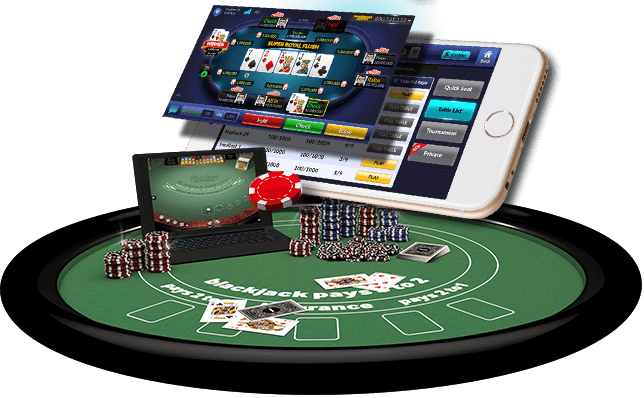
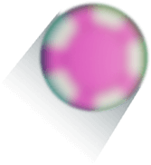
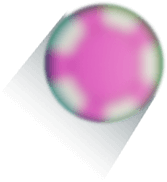

THE CHALLENGE
Many challenges surfaced when we set out to redesign one of the world’s strongest poker brands.
In the showcase below we wanted to share a little bit from process we had, the principles that guided us, the solutions we came up with and of course - the outcome itslef.



Must say within a second A) Poker and B) World Series of Poker. Since we didn’t want to detach the previous brand’s icon we decided to keep it relatively similar yet give it our own touch.
 
